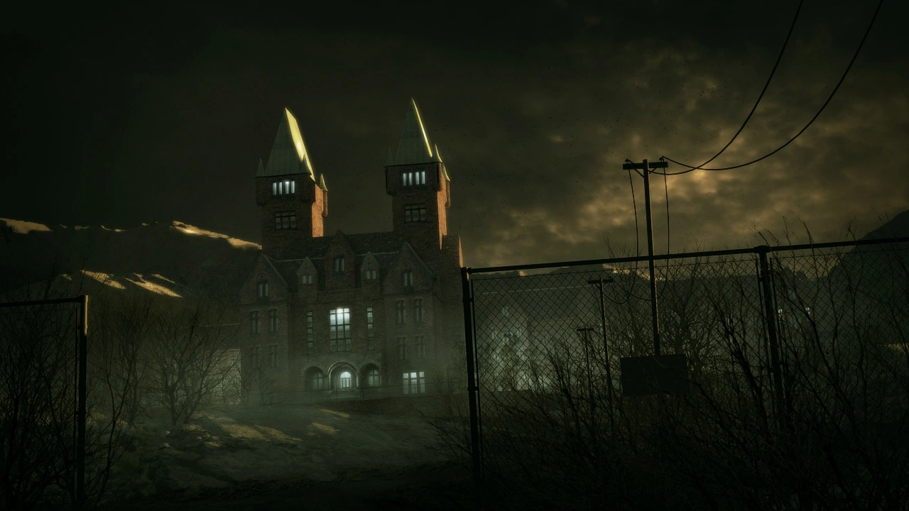

El género de los videojuegos de terror ha experimentado una evolución fascinante a lo largo de los años, y uno de los títulos que ha dejado una huella imborrable en la historia del horror interactivo es "Outlast". Lanzado en 2013 por Red Barrels, este juego se ha convertido en un clásico moderno del género, y su DLC "Whistleblower" amplía aún más la experiencia aterradora. Con su atmósfera inquietante y su narrativa escalofriante, este juego ha dejado una impresión duradera en la comunidad de jugadores de terror. En este blogpost, exploraremos el mundo oscuro y angustiante de "Outlast" y su emocionante expansión.
El inicio del Horror
Outlast nos sumerge en la piel de Miles Upshur, un periodista que investiga los oscuros secretos del Manicomio de Mount Massive, un lugar de pesadilla habitado por criaturas retorcidas y peligrosas. Lo que diferencia a este juego de otros títulos de terror es su enfoque en la indefensión del jugador. Miles no tiene armas, solo una cámara para documentar los horrores que encuentra, lo que crea una sensación de vulnerabilidad única.
La pesadilla continua
El DLC "Whistleblower" ofrece una perspectiva diferente de la historia, permitiéndonos experimentar los eventos que preceden a la trama principal. Controlamos a Waylon Park, un ingeniero de software que se convierte en el "chivato" de los terribles experimentos llevados a cabo en Mount Massive. Esta expansión profundiza en la historia del manicomio y arroja luz sobre los eventos que llevaron al caos.
Inmersión aterradora
Lo que realmente hace que "Outlast" y su DLC sean tan efectivos es su capacidad para sumergir al jugador en un mundo aterrador. Los efectos de sonido inquietantes, los escenarios oscuros y claustrofóbicos, y la narrativa escalofriante se combinan para crear una experiencia que te mantendrá al borde de tu asiento.
Desde su lanzamiento en 2013, "Outlast" ha dejado una marca indeleble en la industria de los videojuegos de terror. Su estilo de juego de supervivencia y su narrativa inquietante han inspirado a muchos otros títulos y han demostrado que el horror no necesita armas para ser efectivo.

Las Influencias en la Historia detrás del Juego
- El Real Mount Massive
- La conexión entre el manicomio ficticio de Mount Massive en "Outlast" y el Asilo Real de Mount Massive, un antiguo hospital psiquiátrico ubicado en Colorado, es una parte fundamental de lo que hace que este juego sea aún más espeluznante. Aunque el manicomio en el juego es una creación ficticia, está claramente inspirado en la arquitectura y la historia del asilo real. La atmósfera opresiva, los pasillos descuidados y las áreas decadentes del juego recuerdan a los relatos de terror que rodean a instituciones psiquiátricas abandonadas como la de Mount Massive. Esta relación con el asilo real agrega una capa adicional de inquietud y realismo al juego, lo que hace que la experiencia sea aún más inmersiva y perturbadora para los jugadores, al mismo tiempo que rinde homenaje a los misterios y las leyendas que rodean a lugares como el Asilo Real de Mount Massive.
- MKUltra: Experimentación y Corrupción
- La trama de "Outlast" también presenta una intrigante conexión con el infame proyecto MKUltra de la CIA, que buscaba experimentar con técnicas de control mental y lavado de cerebro en la década de 1950 y 1960. A medida que los jugadores avanzan en el juego y exploran los oscuros secretos del manicomio, se revela que los horrores que ocurren en Mount Massive están directamente relacionados con experimentos inhumanos inspirados en el MKUltra. Este elemento de la trama agrega una dimensión aún más escalofriante a la narrativa, ya que pone de relieve la corrupción y la crueldad de las instituciones gubernamentales, además de alimentar la sensación de paranoia y desconfianza que impregna todo el juego. La combinación de terror psicológico y una base en la realidad histórica de MKUltra añade profundidad a la historia y aumenta la inmersión en el mundo oscuro de videojuego.
Un Clásico Moderno del Terror
"Outlast" y su DLC "Whistleblower" continúan siendo referentes en el género de los videojuegos de terror. Su capacidad para infundir miedo y ansiedad en los jugadores los convierte en experiencias que no se pueden olvidar fácilmente. Si eres un amante del horror y aún no has tenido la oportunidad de jugarlos, te recomiendo que los pruebes y te sumerjas en este mundo de pesadilla. Prepárate para gritar y esconderte mientras exploras el oscuro y retorcido Manicomio de Mount Massive.